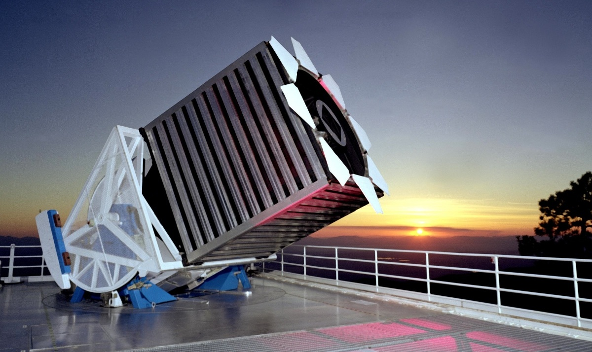

Dimensionality Reduction applied to Large Spectroscopic Surveys
Manuel Pichardo Marcano
 |
Department of Physics and Astronomy |
Lubbock
May 2018
May 2018
Fingerprint of the Stars

The Harvad "Computers"
Early Spectral Classification
- Annie Jump Cannon Award in Astronomy
- Leavitt Law
OBAFGKM sequence
A theoretical breakthrough
- Primarily a temperature sequence
- Composition differences are minor
- Stars are predominantly H and He
There is no joy more intense than that of coming upon a fact that cannot be understood in terms of currently accepted ideas." —Cecilia Payne
Nancy Grace Roman
"The Mother of Hubble”
- Study heavy elements in stellar spectra:
- First clue to the evolution of the Milky Way
Next Generation Spectroscopic Surveys
Era of data-rich astronomy

Explosion in size and complexity of data sets
Large Spectroscopic Surveys
The Challenges
- Data size and complexity
- Data Compression
- Noise:
- Filter Glitches, Skylines, Cosmic Rays
- Feature Extraction:
- $T_{eff}$, log(g), [Fe/H]
- Classification:.
- Automatic Classification
Dimensionality Reduction Methods
The Data
SEGUE: Sloan Extension for Galactic Understanding and Exploration
Principal Component Analysis of SDSS Stellar Spectra
- Matrix
- 5000 stars X 2000
- 3850-9000 Å
- 82 Line Index (EW)
- Atomic and molecular lines.
- 5 components:
- 95% of variance
Spectra Reconstruction
PCA Decomposition Results
- Correlations eigencoefficients and stellar parameters:
- First components related to $T_{eff}$
- Smaller singular values related to log(g)

$T_{eff}$ Calibration
- "A PCA approach to stellar effective temperatures" Muñoz Bermejo, J et. al 2013
- Applied to Library of Synthetic Spectra
First Component and $T_{eff}$
2 Dimension
First Component and $T_{eff}$
3 Dimension
Classification: Unsupervised
- Plot Reduced-dimension representation
- Linear Decomposition
- PCA, ICA, NMF
- Non-Linear Decomposition
- Stochastic Neighbor Embedding (tSNE)
PCA
NMF
t-SNE
t-SNE
Conclusions
Dimensionality reduction methods like PCA and t-SNE can be used to efficiently target the future challenges with the huge increase of spectroscopic data soon available from future and ongoing all-sky surveys.
Future Work
- More data
- Try with >5000 stars
- Giants, Dwarfs. Late type stars ...
- Supervised Learning:
- PCA can be combined with ANN
- Outliers:
- Take a closer look at outliers
- Hidden Accretors, Binaries, misclassified stars ...?
- Use Line Index:
- Matrix of Equivalent Width
- Radial Velocity, Distance, Emission lines ...
Gracias
|
Department of Physics and Astronomy |